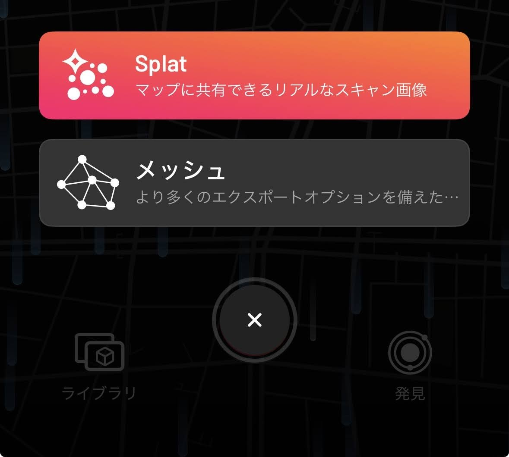
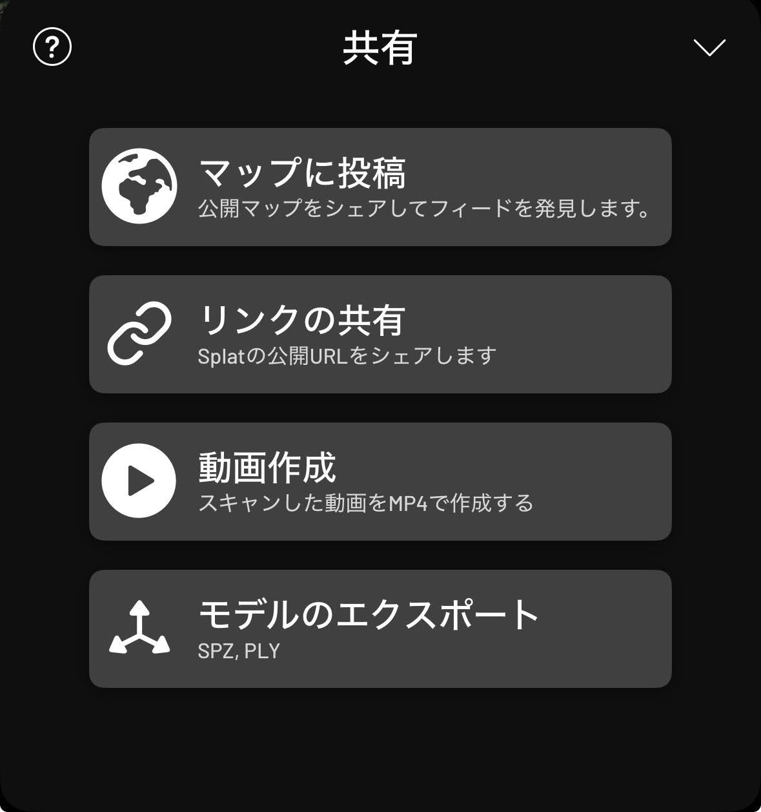
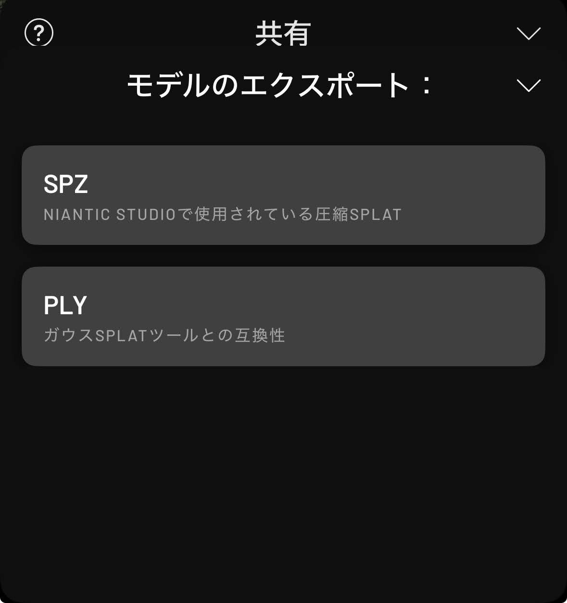
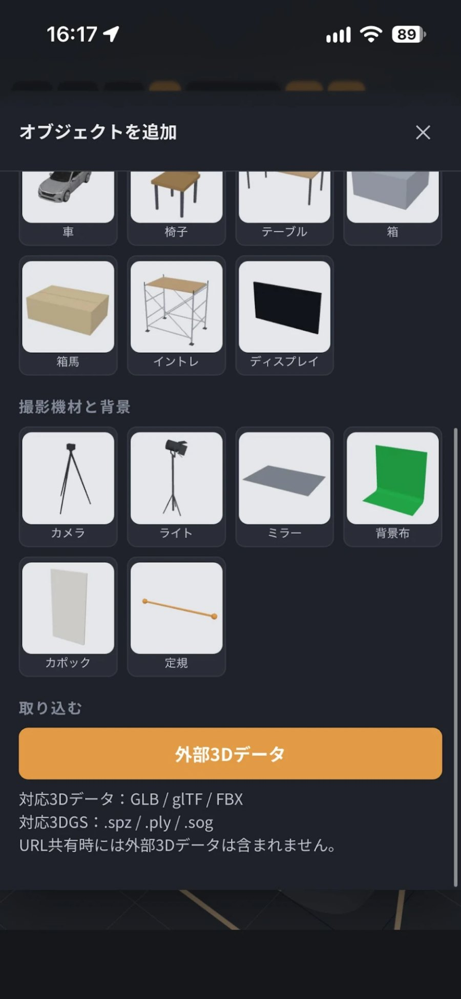

ロケ地を3DスキャンしてStudioPlannerで使用しよう。
Scaniverseとは
無料で使用できる人気の3Dスキャンアプリ。
スマホだけで部屋などの形状を手軽に3Dスキャンして保存できます。
StudioPlannerではScaniverseでスキャンした3Dデータをそのまま取り込んで、レイアウトプランを確認する事が可能です。
Step1：Scaniverseでロケ地をスキャン。
スキャンモードは「Splat」
スキャンを始めるとき、モードは「メッシュ」ではなく「Splat」を選びます。
スキャンをスマホに保存
スキャンが終わったら、「共有」→「モデルのエクスポート」→「SPZ」。
保存先は、スマホ本体（ファイルApp）にします。



Step2：StudioPlannerで取り込んで使う。
SPZファイルを読み込む
「＋」→「外部3Dデータ」から、保存したSPZファイルを選びます。
位置を合わせる
読み込んだスキャンの位置と向きを調整します。あとは人物や車、カメラを置くだけです。


ヒント
スキャンデータは、Scaniverseのトリミング機能で必要な部分だけに切り取ってから書き出すと、Studio Plannerでの位置調整が楽になります。